HPod Hexapod
2026Hexapods are really cool, so I made a hexapod. This is HPod, a low-cost, six-legged robot made with 3D-printed parts and servo motors, controlled wirelessly with an ESP32. This was a really fun build, and I'm very happy with its performance.
I wanted to design something anyone could assemble without spending too much, so the robot uses cheap MG996R servo motors and the total cost comes to less than $160 USD. If you're interested in making HPod, the full BOM, CAD, and code files are on GitHub.
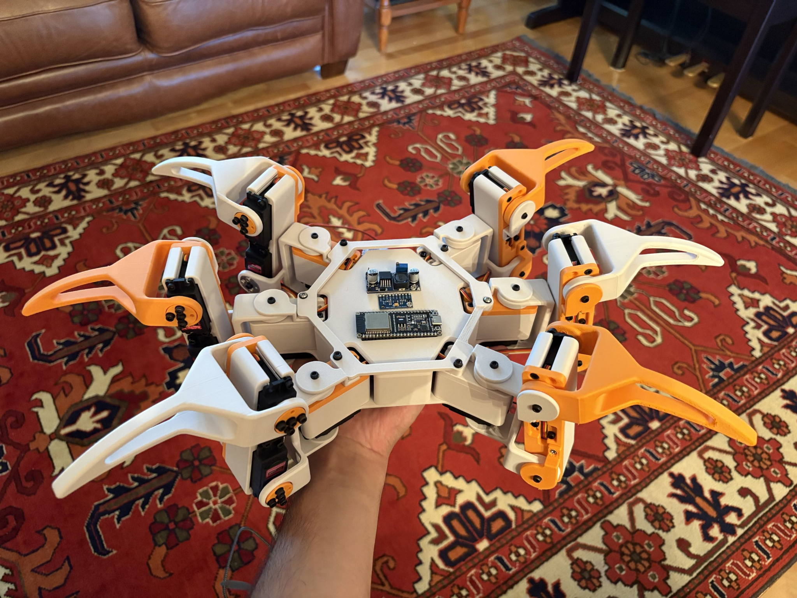
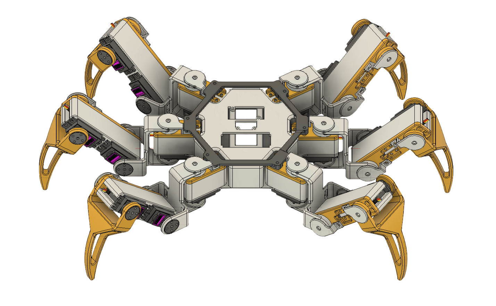
How it works
The robot uses 18 servo motors, three per leg. Each servo can move to specific angles within 180 degrees of rotation, allowing precise motion for each leg. The ESP32 microcontroller connects to my local Wi-Fi network and allows the robot to be controlled through a browser on any device.
Project features
- 3-week build
- Total cost: $150 USD
- ESP32 controlled
- 3D-printed frame
- 18× MG996R servos
Robot features
- 18-DOF hexapod robot
- 3 walking patterns
- 7 stationary motion patterns
- Wireless control over Wi-Fi
Electronics
- ESP32-S3
- 2× PCA9685 servo motor drivers
- Voltage converter
- 7.4 V LiPo battery
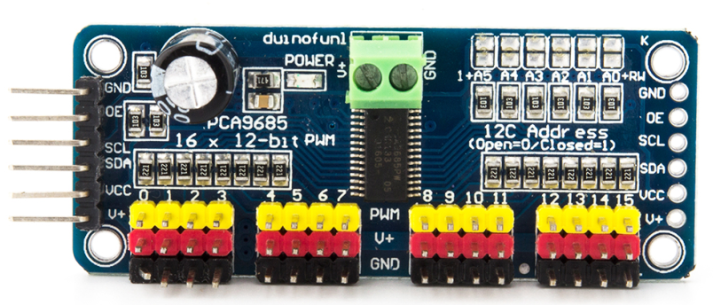
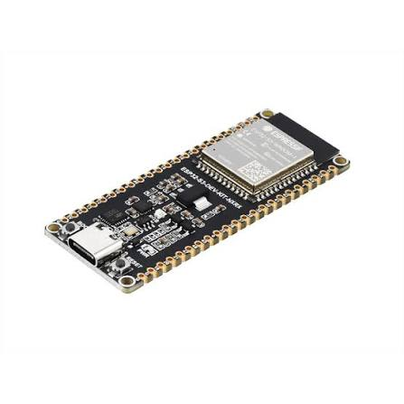
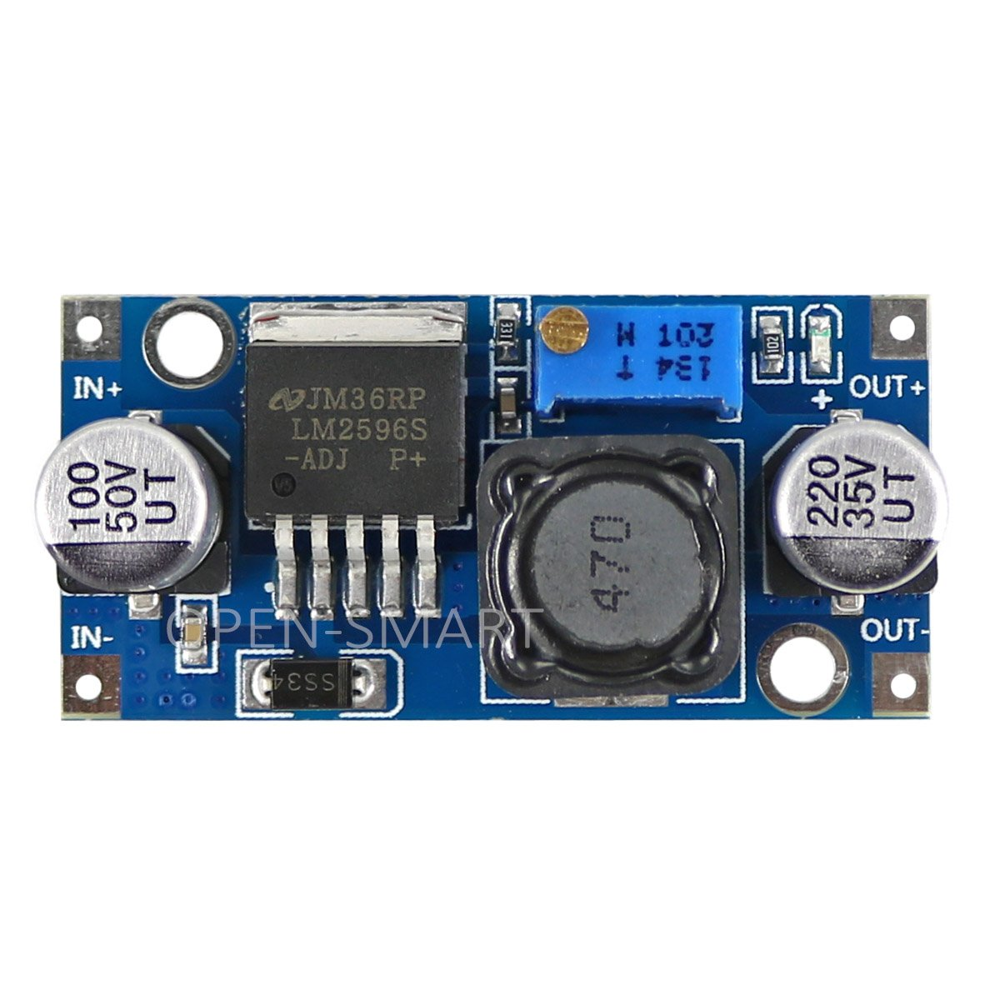
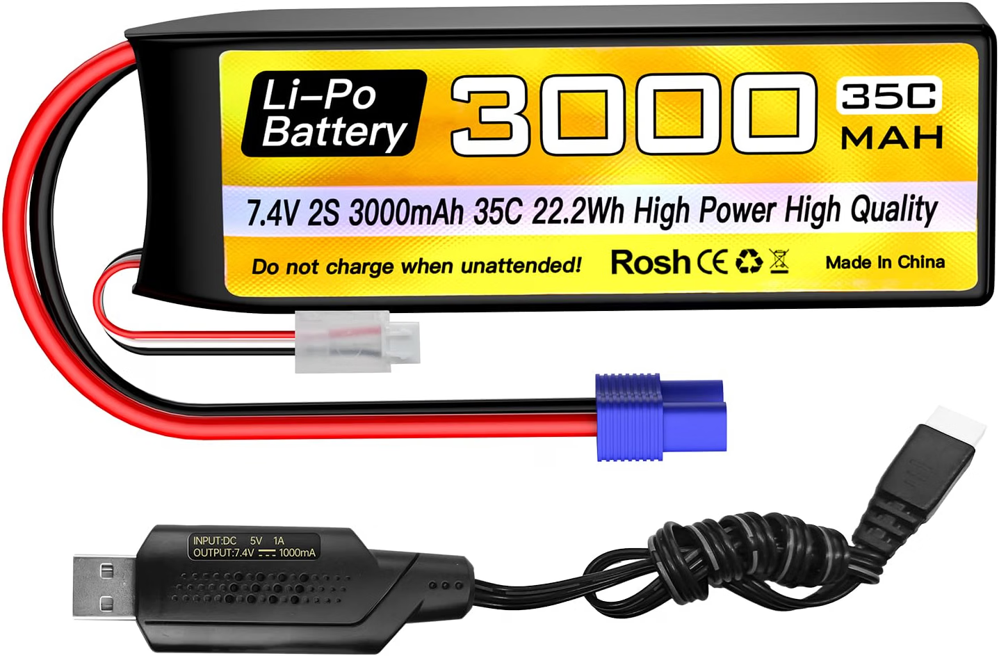
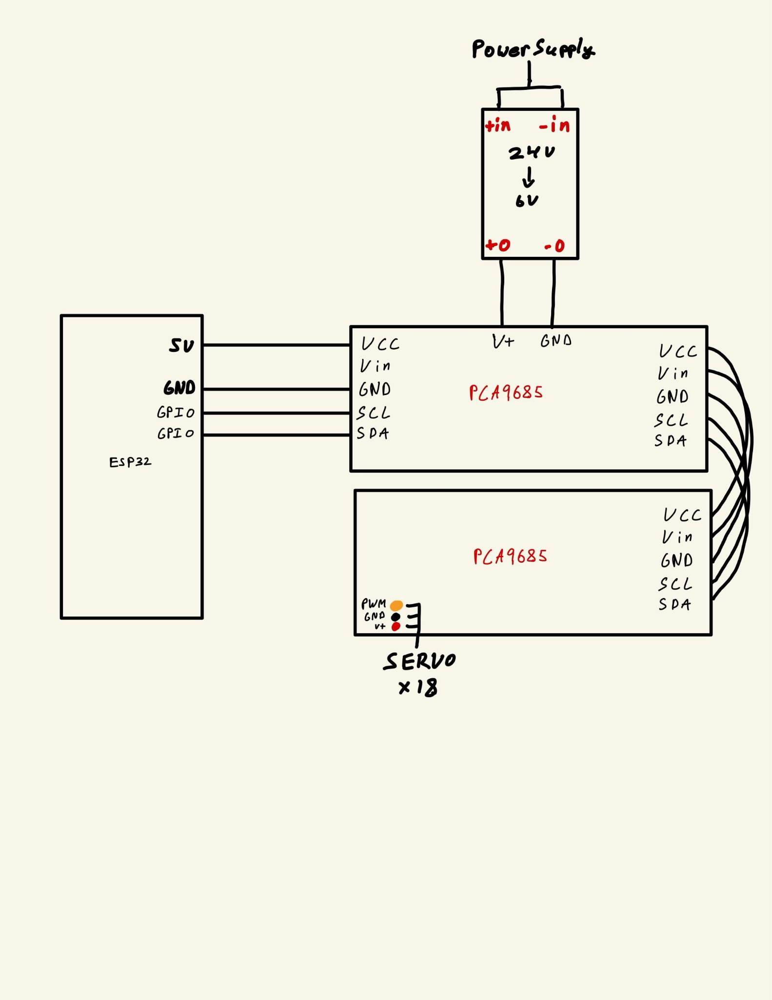
Build process
Leg design
The robot is made up of six identical legs housed on a central chassis. Each leg consists of three servo motors, which control what I call the “hip,” “thigh,” and “shin” of the leg. I went through six versions of the leg design before ending up with the final result.
The thigh is one long bar that holds both the thigh and shin servos. A plate is screwed into the bottom of the thigh mount to hide the wires and help attach the other leg parts. The shin needed to be longer than the thigh to improve walking functionality, but making it too long would reduce stability when using these cheap servos. I ended up making the shins 140 mm long. To attach the shin to the thigh and the thigh to the hip, a small bearing is inserted into the limb and a long bolt holds it in place. To drive the limbs, a servo disc is screwed onto the opposite side.
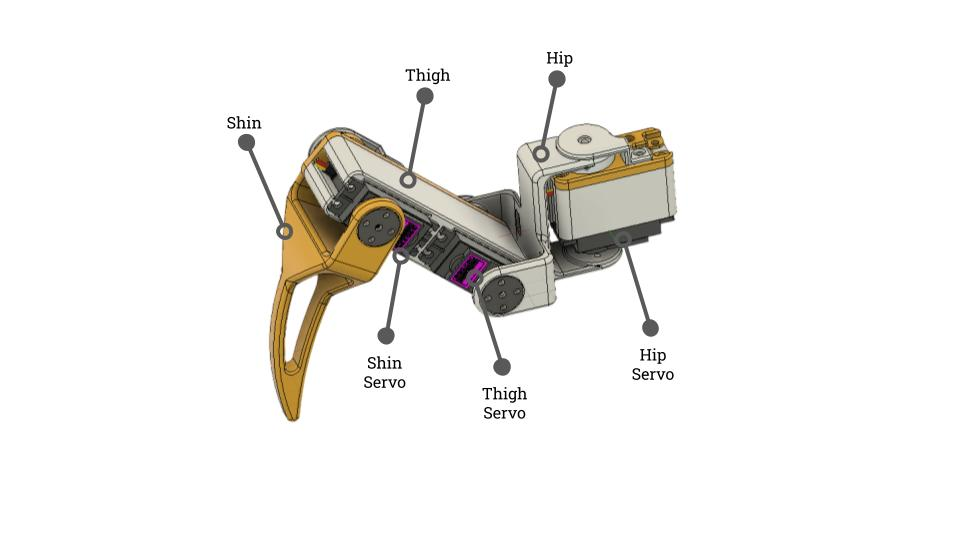
Chassis and wiring
To compensate for the shape of the battery, the chassis is slightly oblong, with the legs not pointing directly out of the corners. Each hip is bolted to the chassis, with an additional round brace connected to each leg for reinforcement. The wires run through the hip joint, under and through the chassis, and plug into two PCA9685 servo drivers. There was limited space in the chassis base, so the rest of the electronics are mounted on top.
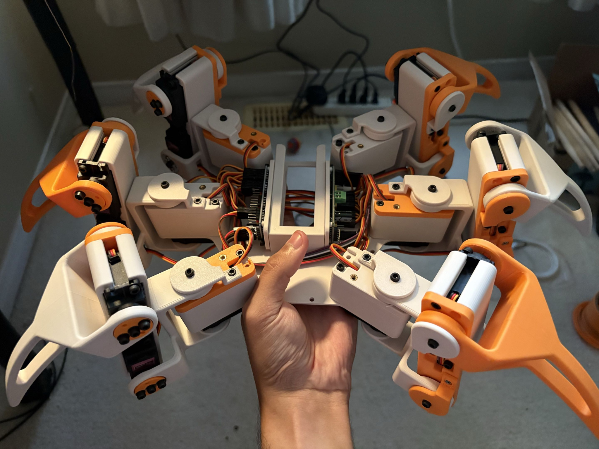
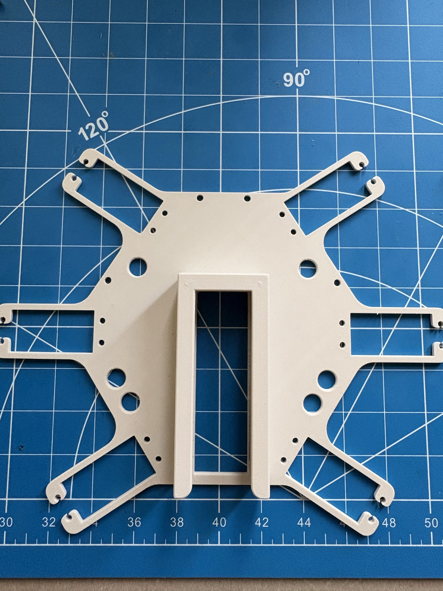
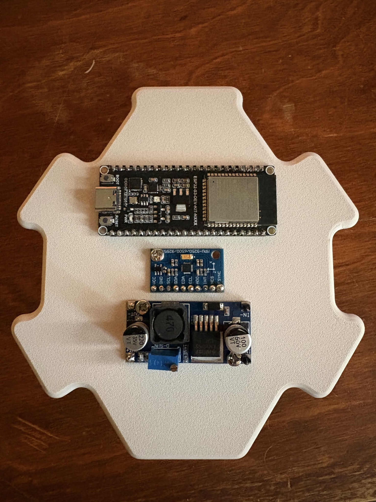
Control
The CAD model gives the angle between components at their maximum positions, which is used to calibrate the robot and constrain a URDF model. To calibrate, each motor is moved to its maximum position, and the current servo angle is remembered. Since each servo starts at a different angle, after all motors are calibrated, the motor with the least rotation available is used to constrain the rest.
Now that the robot is built and the ESP32 knows the angle of every joint, it can walk. Inverse kinematics equations calculate the movement of the legs. A few variables are available to change the robot's motion, including chassis height, speed, and leg radius.
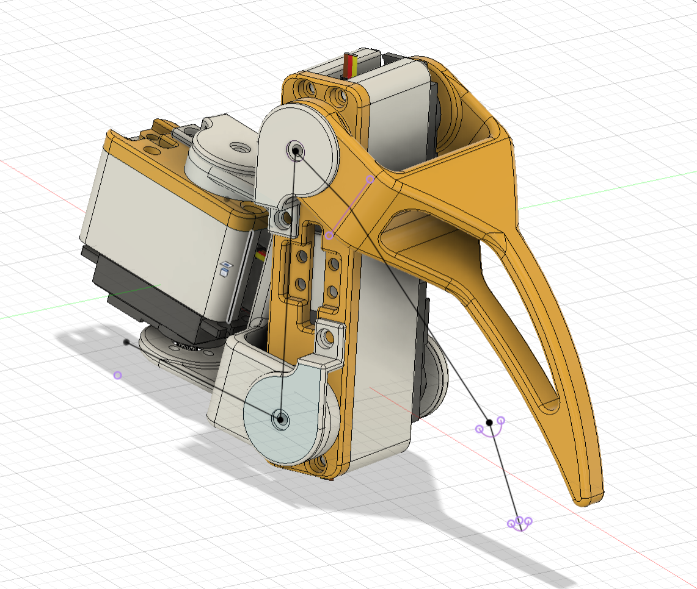
Final results
The robot has three walking-pattern options. “Tripod” is the default and performs the best, working by moving three legs at a time. “Ripple” and “Wave” patterns are also available, along with several stationary “stretching” patterns.
Things I'd change
I didn't realize the servo driver boards don't power the ESP32 and that it needed to be powered externally. I'd definitely like to fix that and add a power switch instead of plugging the power and ground of the battery directly into the voltage converter.
The main limiting factor in the quality of the robot's motion is the cheap servos I used. If I had a little more money to spend on motors, it would improve the robot instantly.
There is an MPU on the robot, but because of some wiring issues I wasn't able to use it. I'd love to get that working properly to actively improve stability and walking on uneven surfaces.